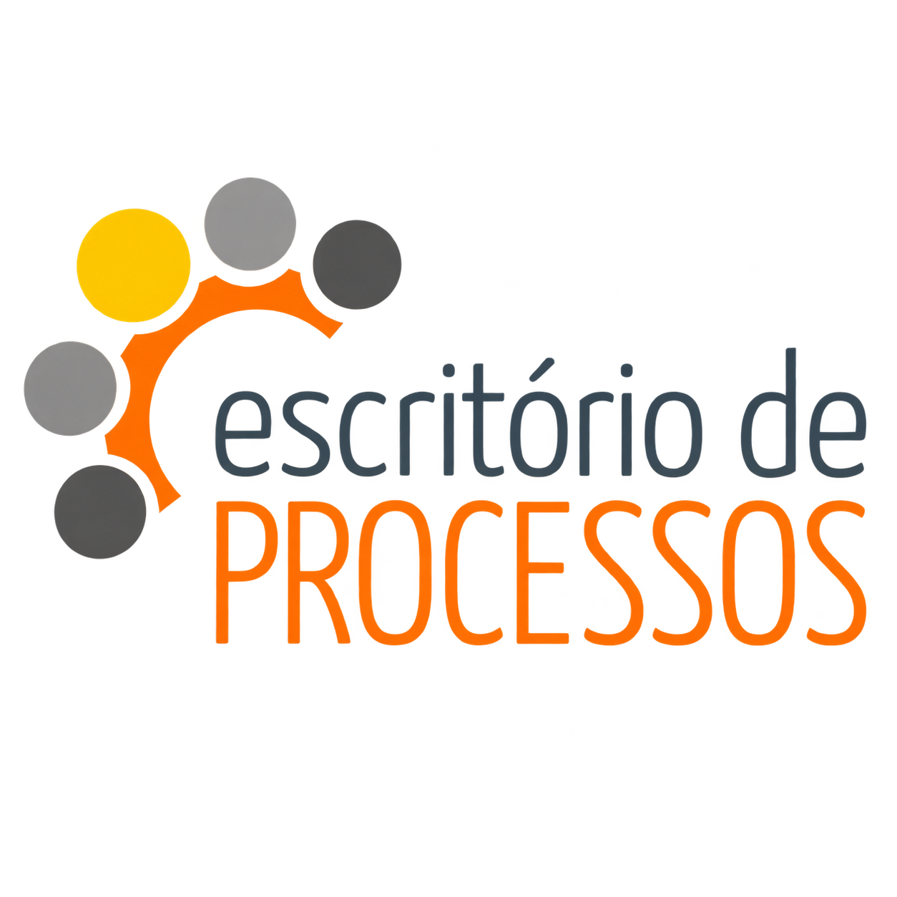

PORTFÓLIO DE PROCESSOS DA UTFPR

PESQUISA
Pesquisa e Inovação
(Captação, Editais, Fomento, Alocação de Recursos)
Projeto de Pesquisa
(Planejamento, Desenvolvimento e Divulgação)
Bolsas de Pesquisa
(Captação, Distribuição, Monitoramento)
Publicações Científicas
(Monitoramento, Avaliação, Publicação)
Resultados para SOCIEDADE